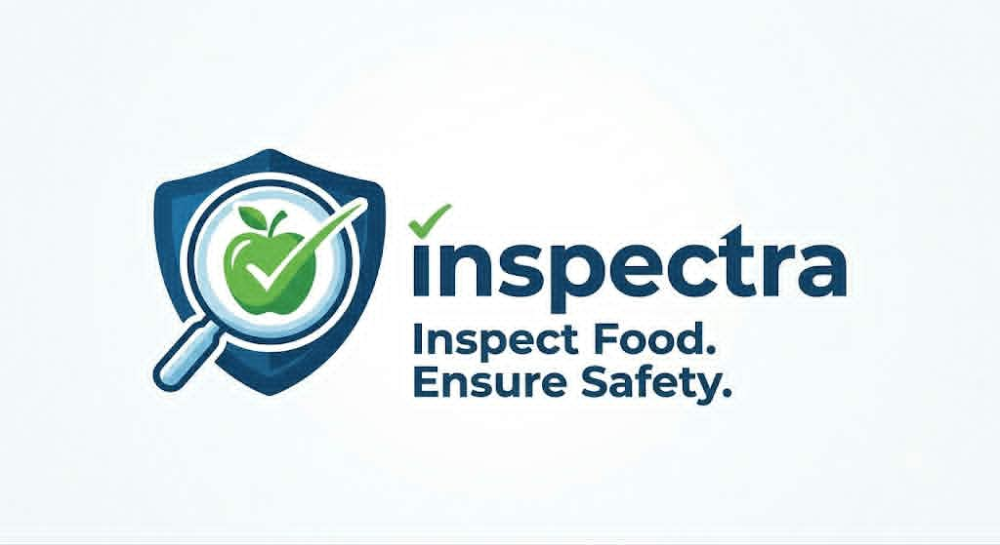
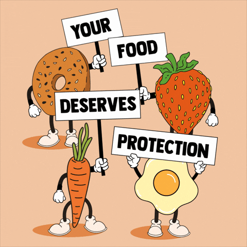
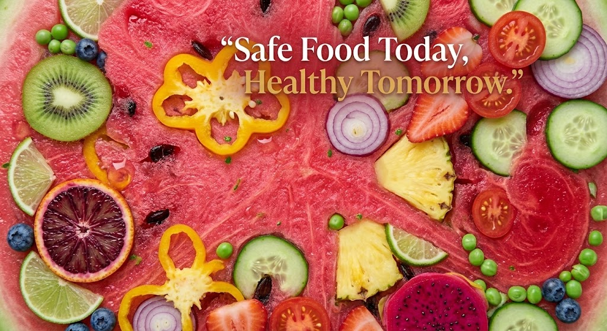

INSPECTRA is a simple educational website about food quality inspection, food safety, food storage, and food standards. The purpose of this website is to create awareness about safe food practices and help people understand how food quality is maintained.

Food quality ensures that food is safe, fresh, nutritious and suitable for consumption. Poor quality food can cause food poisoning, health problems and financial loss. Regular inspection helps maintain food standards and protects consumers.
| Food Type | Examples | Storage |
|---|---|---|
| Fruits | Apple, Mango, Banana | Cool and Dry Place |
| Vegetables | Carrot, Tomato, Cabbage | Refrigerator |
| Dairy | Milk, Cheese, Butter | Refrigerator |
| Meat | Chicken, Beef, Fish | Freezer |
Click the image below to learn about food inspection.

INSPECTRA
Food Quality Inspection System